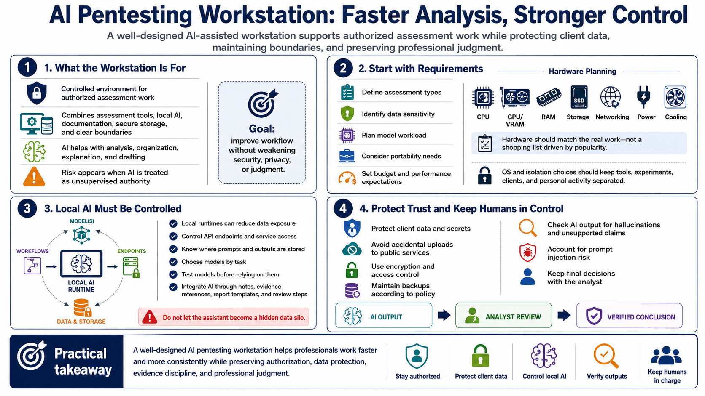

Course Summary and Key Takeaways
Connecting to LMS... Progress: in progress

Narration
An AI pentesting workstation should improve authorized assessment workflows without weakening security, privacy, or professional judgment. It is a controlled environment that combines assessment tools, local AI capabilities, documentation practices, secure storage, and clear boundaries. AI is useful when it supports analysis, organization, explanation, and drafting. It becomes risky when it is treated as unsupervised authority.
Strong setups begin with requirements. Define the assessment types, data sensitivity, model workload, portability needs, budget, and performance expectations before choosing hardware or software. Hardware should match the work, including CPU, GPU, VRAM, RAM, storage, networking, power, and cooling. Operating system and isolation choices should keep tools, experiments, clients, and personal activity separated.
Local AI runtimes can reduce data exposure, but they still require careful configuration. Control API endpoints, understand where prompts and outputs are stored, choose models by task, and test them before relying on them. Integrate the assistant into the workflow through notes, evidence references, report templates, and review steps rather than letting it become a hidden data silo.
The goal is faster, better-supported analysis. Protect client data and secrets, avoid accidental upload to public services, use encryption and access control, and maintain backups according to policy. Check AI output, account for hallucinations, handle prompt injection risk, and keep final decisions with the analyst. A well-designed workstation helps security professionals work more consistently while preserving the trust that assessment work depends on.